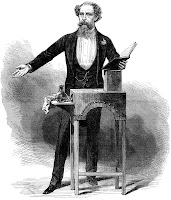
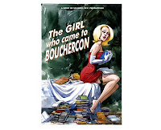

{kind=link}

I was the after-dinner speaker at the Royal Orwell & Ancient Yacht Club on Saturday. (Its members think that it's called the Royal Harwich Yacht Club but readers of The Salt-Stained Book and A Ravelled Flag know better.) It was that happy moment when the talk is over, the people who hated it have fled and the friendly ones come to chat or bring a book to be signed. "I'm so sorry," said a charming woman, "I read both your books on my Kindle while we were away sailing and I've only just realised that means I've nothing to ask you to sign."Frankly my signature's like a crab on crutches but I was sorry too. It had been such a companionable evening that I would have liked to scribble something for her that would have recorded our brief meeting. Names, date and place would have been enough. Perhaps, another time, I'll take some postcards with the bookcover image and a web address. Instead I said, "Ooh that's exciting, would you go on Amazon and click Like for me?"
Secretly what I meant was "Would you please give it some stars and a review?" but I still find that almost too hard to say. I was surprised that I even got the first bit out but I'd been given firm instructions by Amanda Craig, children's book reviewer of the Times who has recently seen her bookreview space cut from once a week to every three. She's very clear that there are scarcely any authors, whether independently or corporately published, who can expect anyone else to do their marketing for them. Amanda's a well-established successful novelist whose publisher is putting her backlist onto Kindle. "Get 500 downloads of A Private Place," she's been told, "And we'll guarantee you another paperback reprint."
Promoting one's own book is hard, whoever has published it: promoting an e-book is harder still. I went to the mystery novel convention, the Bouchercon, in Indianapolis some years ago and was almost buried under the whelter of book marks, book bags and promotional copies that novelists were foisting on their possible fans. One local TV presenter came to the welcome session and began hurling copies of her novels into the audience. I ducked. Others leaped to cat
{kind=link}

ch them as if they were mass-produced bridal bouquets.On the final day of the convention there was a giveaway. A huge room with long trestle tables and maybe sixty novelists sitting there with free copies to hand out. The punters were given three scraps of raffle ticket which they could exchange for the books of their choice - if they made it to the front of their chosen queue. The scrum to get through the door and first to the prestige writers was intense: the melancholy of those individuals still sitting there at the end with undiminished heaps was heart-breaking.
I can't help wondering what the Bouchercon looks like now? Self-publishing and therefore self-promotion is big business in the US - virtual as well as tangible. But you can't chuck an e-book into an audience: you can't dish out ready-printed book marks or book bags. You can network, you can facebook, you can tweet but who is going to see or hear you amid the roar of electronic traffic?
I can't help wondering what the Bouchercon looks like now? Self-publishing and therefore self-promotion is big business in the US - virtual as well as tangible. But you can't chuck an e-book into an audience: you can't dish out ready-printed book marks or book bags. You can network, you can facebook, you can tweet but who is going to see or hear you amid the roar of electronic traffic?
Henry Porter included some staggering statistics in his rebuttal of Jonathan Franzen in Sunday's Observer. The amount of information passing through our minds has risen threefold over the last thirty years he claims. An office worker processes an average 20,000 emails each year (and this is rising by about 14% each year); an American teenager is likely to send and receive about 3339 texts each month; Facebook gets over 100 billion hits each day; while Twitter records about 1 billion tweets every week.
Speaking as someone who isn't entirely sure how many noughts there are in a billion these numbers seem seem dauntingly large. Whatever would be the use in trying to add to them? I discovered a Goodreads group called "How to promote your book on Amazon". It explained to me that if I made clever use of the tags at the bottom of each book entry I would gain entry into various 'communities' I might even gain a ranking within these communities if other people also clicked my tags. I imagined myself at the R.O & A asking some salty sailor to go click my tags ...
It was at an earlier yacht club gathering that I met Doug, a Californian who was working as a deckhand on the HMS Bounty.
He was frustrated because he'd ordered a paper copy of my story to be waiting for him in an Irish port. Then wind and weather had changed the ship's plans and he'd not been able to collect it. I hadn't even thought of electronic publishing then. Iain, who lives on a houseboat, said he only ever read electronically because of considerations of space. Lindsay, a photographer, was fascinated by the technical challenges involved. We were all sitting on board an elderly classic yacht - and my e-publishing career began.
{kind=link}
He was frustrated because he'd ordered a paper copy of my story to be waiting for him in an Irish port. Then wind and weather had changed the ship's plans and he'd not been able to collect it. I hadn't even thought of electronic publishing then. Iain, who lives on a houseboat, said he only ever read electronically because of considerations of space. Lindsay, a photographer, was fascinated by the technical challenges involved. We were all sitting on board an elderly classic yacht - and my e-publishing career began.
Hand on heart I'm still a paper person but I read Jan Needle's The Bully on my Kindle last weekend with complete enjoyment, eschewing the temptations of secondhand market place copies. Producing a professional quality paperback to sell through traditional bookshops is thrilling when it works, expensive and depressing when it doesn't. One reprint too far and all the good work of a first edition can be wiped out and suddenly the office space is full of unopened cardboard boxes gathering dust. Many people, not only sailors, want or need to live without clutter and that may mean without physical books. Those people don't need persuading to use an e-reader, they need to see what's available for them to read. Visibility.
Reviewing's important - and I hope Cally Phillips's indie e-readers site flourishes. I also hope that we soon get over the feeling that independently published books have to be protected from the rough and tumble of the mainstream book world. It's just been announced that there's to be a new Alliance of Independent Authors, separate from the established Society of Authors. We're not a different species, we're all writers, trying to reach out to readers.
Charles Dickens, whose two hundredth birthday was on Tuesday, was endlessly innovative in the format of his stories -- weekly instalments, monthly instalments, volume publication. He used multiple publishers, he self-published, he self-promoted but above all he connected with his readers. He achieved this in person through his reading tours but the true connection was virtual. He connected with his readers though words and imagination. Perhaps it may still be true that writing to the best of our ability and talking about our own and others' work with honesty and enthusiasm is better than tag-clicking or fretting about our position in the ratings.
{kind=link}